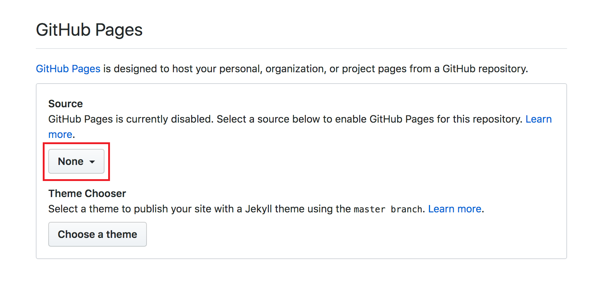

Sign in
Go to the upper right hand corner and locate the plus sign drop down menu, and select "new repository"
Next name the repository to match the file that is being uploaded
Make sure to select the "Initalize this Repositoty with a README" check box
Select Create Repository
Locate the Upload files button on the screen, select it.
Either Drag your fie into the large grey rectangle
or
Select choose your file highlighted in blue
This will allow you to browse all your files in order to select the right one.
Once you have chosen the correct files you can them select commit changes
Now that your files have been uploaded, select the settings icon located near the top of the page
Scroll Down and Find GitHub Pages
Under source change the drop down from none to master barnch
Relocate the GitHub Pages section and select the newly published link at the top of the section
If your code was not succesfully published you may want to look through all your naming conventions and through your code to see if there are any errors. If the webpage still doesnt publish ask for help!